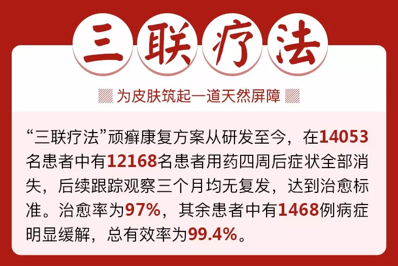

郑重承诺：
此方案经临床验证，总有效率99.4%
不管你是几十年的牛皮癣；
还是十几年的体癣、股癣；
或是简单的湿疹、神经性皮炎、过敏性皮炎等等。
现在只要使用这个“三联疗法”顽癣康复方案，即通过清癣毒、净血液，再外喷抑菌液修复皮损，抑制病菌，同时配合苗侗瑶百年外护乳膏，重建免疫系统，为皮肤筑起一道天然屏障！就能轻松告别各类皮肤顽癣。

致癣友的一封信
亲爱的癣友们：
你是否花钱无数，病情不但没有好转，反而更加严重？你是否在亲人面前饱受冷落，在朋友面前遭受异样眼光？你是否每天把自己裹得像个粽子，在孩子眼里就是个怪物？
自从患了牛皮癣，你是否发现西药中药用了不计其数，土方偏方数不胜数，最终不但没治好，反而导致病情大面积爆发，全身鳞屑不停的脱落结痂，痛不欲生，跑了很多三甲医院，大小诊所，民间名医。在一次次治疗，一次次扩散后，身心受到了很大的伤害，过度的服用各类药物导致肝肾功能下降，身体免疫力非常差。
甚至很多牛皮癣、体癣、手癣患者治了几年、十几年甚至几十年的病，花了几千、几万甚至十几万的钱，最后不仅身体垮了，钱也花光了，还背了一身的债......
添加＂去癣三联疗法＂官方微信号
为何皮肤病久治不愈年年治年年发
从人类诞生的第一天开始，就在与皮肤顽癣作斗争，几千年来，却始终没有一个突破性发展。庆幸的是，早在10年前，科学院的科学家意外的发现，皮肤病久治不愈、反复发作、甚至遗传，在于人体存在“碱性异常粘液质”。
科学院研究表明：皮肤病实质是一种基因病。所有的皮肤病，不管是严重的牛皮癣（银屑病），还是体癣、股癣、手癣、神经性皮炎、湿疹等，基因病变的根源都是因为人体内产生了一种“碱性异常粘液质”（碱毒复合体），这种“碱性异常粘液质”就是血液、组织细胞液之间存在毒素，导致脏毒淤积，到一定程度后症表于皮肤，就形成疹、癣等皮肤顽疾。
因此，治疗皮肤顽癣，必须从导致“皮肤基因病变的根源”入手，深层清除血液、脏腑中的毒素，同时通过调理脾胃，恢复机体的正常代谢功能，清除“碱性异常粘液质”，才能彻底根除皮肤顽癣。
可以说，科学院发现了解救皮肤顽癣的基因密码，预示着人类将在不久的将来，彻底攻破皮肤顽癣，让我们饱受顽癣折磨、困扰的患者迎来新的希望！走上健康的新生活！
添加＂去癣三联疗法＂官方微信号
科学院发现破解癣毒基因密码
告别顽癣反复发作，重获健康皮肤
大家都知道，皮肤病是病在表皮，但根在血液，不管什么皮肤病，仅仅依靠外用是不可能彻底治愈的，只能改变一时的症状，“三联疗法”的核心在于开创了国内顽癣的专用国药。
祛癣的配方来自新疆南部一个偏僻的小山村，这种地方的生存环境，在医学上是极易产生皮肤病的地方，而千百年来皮肤病患者却非常少。这究竟是为什么？这一神奇现象引起了科学院专家们的好奇和重视。
为 了破解这个谜，科学院专家组进行了深入研究，发现这个地方有两种神奇的植物，当地的牛羊非常喜欢吃。通过进一步研究，发现这两种植物里有一种变异基因修复 酶，并发现维族人通过吃这些牛羊肉，自身就含有了这种变异基因修复酶，而这种基因修复酶能抑制人体碱性异常粘液质分泌。
从
记载发现，这两种神奇的植物在中药大词典中至今没有记载，只有维族名称叫菝葜、欧菝葜根。为了更好的利用好这两种药材，科学院专家进一步研究，并结合中医
理论，加入了黄连、白芝麻两味药材，经过近10年数以万计的临床试验下，成功开发出专治牛皮癣、体癣、神经性皮炎等皮肤顽癣的特效新药。这一科技成果，标
志着我国在皮肤病医药领域取得重大进展。
目前，科学院专家进一步结合我国苗侗瑶中医、苗侗瑶少数民族治疗顽癣的方法，配以抑制皮肤表面病菌、修复基因的外用喷剂和重建免疫系统的外用膏剂，首创了治疗顽癣的“三联疗法”。
“三联疗法”治疗顽癣能从根源剪断核心病菌基因复制链，实现前所未有的“汗血同治，双向排毒”的特效，强力控制“碱性异常粘液质”的复制和扩散。彻底治愈皮肤顽疾，恢复皮肤光泽度。
临床治愈标准的结果证明：三联疗法对牛皮癣、体癣、股癣、神经性皮炎、湿疹、皮肤瘙痒等有神奇的治疗效果。
添加＂去癣三联疗法＂官方微信号
扒掉老癣皮，换张健康皮！
经过科学院专家组精心研究，研究结果让专家大吃一惊：这个顽癣康复方案“三联疗法”不光针对包括牛皮癣在内的各种皮肤顽癣，对于皮炎、肌肤瘙痒、湿疹等等，也有惊人效果，对于“三联疗法”方案，科学院专家组给出了非常详尽的研究结果：
1
“外用除癣征”：治疗顽癣的两个外用方法（修复皮损、抑制病菌的抑菌液和配重建免疫系统的苗侗瑶百年外护乳膏），两者搭配，一喷一抹，一举击溃真皮层残留的真菌，修复受损细胞，真菌不再存活，皮损愈合，癣征消失。
“内服清血毒”：所 有的皮肤病，无论是严重的牛皮癣（银屑病），还是体癣、股癣、手癣、神经性皮炎、湿疹等，基因病变的根源都是因为人体内产生了一种“碱性异常粘液质”（碱 毒复合体），口服国药能迅速溶解堵塞汗腺的有毒物质和患病组织，疏通汗腺排毒渠道，清除体内血毒，强力控制“碱性异常粘液质”的复制和扩散，从而彻底清除 各类顽癣。
科学院专家组强调：通过口服加外用剂型的三联疗法，“外用除癣征，内服清血毒”，不仅能全面清除“碱性异常粘液质”，而且阻断病菌蔓延，剪断复制链条，为肌肤建立起天然的屏障。对牛皮癣、体癣、股癣、神经性皮炎、皮肤瘙痒等有神奇的治疗效果。
2
A:清毒止痒。使用顽癣康复方案“三联疗法”1-2个疗程，快速杀灭患处碱性异常粘液质及各种毒素，有效解除瘙痒、脱屑症状；同时，活性极强的“生物分子剪刀”迅速直达病灶，聚结成网状分子团，全方位重重包围碱毒复合体，强力控制碱性异常粘液质的复制和扩散，迅速改善病情。
B:灭毒治本。使用顽癣康复方案“三联疗法”2-4个疗程，全身治 疗，清除各种毒素，改善体液内环境，皮损、脱屑、瘙痒、炎症等症状消失。同时，“生物剪刀”强力穿透碱毒复合体外壳，迅速抵达其核心，剪断其基因复制链， 肢解碱毒复合体，并将其快速溶解，通过新陈代谢排出体外，全面祛除病根！
C:阻断复发。使用顽癣康复方案“三联疗法”4-5个疗程，清扫全身残余毒素及碱性异常粘液质，同时，恢复体液平衡态和自身免疫力，激活皮肤组织细胞自我修复和代谢功能，长出新鲜肌肤，彻底解决皮肤顽疾，强力阻断复发隐患！
牛皮癣、头癣、体癣、股癣、手足癣、花斑癣、湿疹、神经性皮炎、过敏性皮炎、顽固性瘙痒、皮肤瘙痒症、皲裂性湿疹等。
康复案例，都说这个方法效果好
先生：11年牛皮癣痊愈了

我今年37岁，开出租车，武汉洪山人，患牛皮癣11年，一到秋冬两季就换皮，鳞屑一层一层的掉，用了很多方法，一直不能根除，家人朋友都嫌弃。使用顽癣康复方案“三联疗法”40几天，鳞屑全部脱落，皮肤不再干痒，随访未见复发。
先生：多年体股癣全没了
我今年41岁，家住成都锦江区，机关干部，患【体股癣】多年，剧痒，抠得流脓，抹生姜，涂软膏，都没用，有臭味，使用顽癣康复方案“三联疗法”一个疗程，皮损部分愈合，两个疗程皮肤光滑如新，现在家庭幸福，工作更有信心了。
女士：10年慢性湿疹康复了
今年46岁，天津人，在外企做财务经理，患慢性湿疹10年，经多家医院治疗未果，经常四肢霉烂，奇痒。使用顽癣康复方案“三联疗法”后，瘙痒立即消失，两个周期，患处如常，无疤无痕。
女士：手癣好了，至今未复发过
46岁，手癣发作，手上皮烂了一片，用了很多药也不管用。她很苦恼，男友几次求婚，她都不敢回应！使用顽癣康复方案“三联疗法”10天后，所有症状减轻，2个周期完全康复，后期随访至今未发。